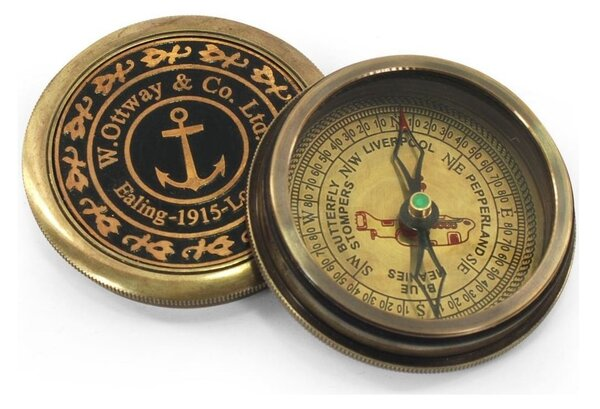
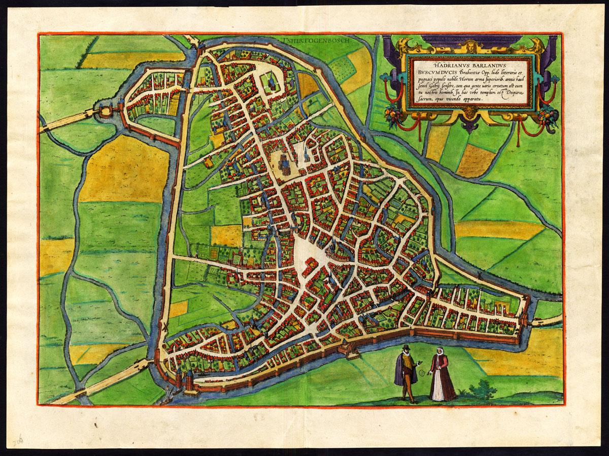
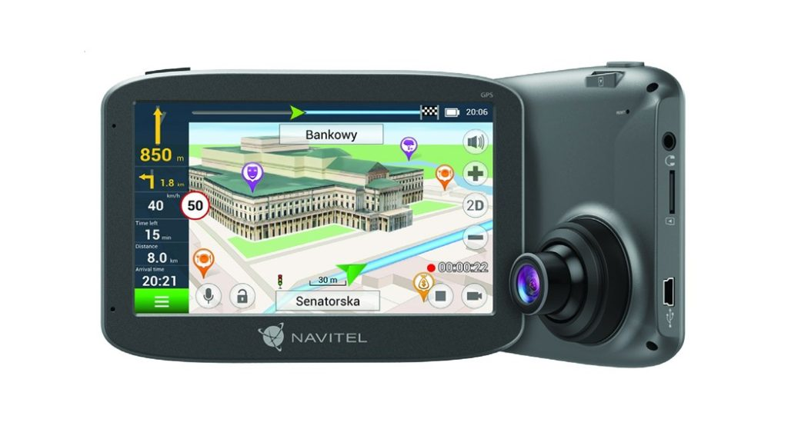

Ősi tájékozódás
A tengeren és a síkságokon a legfontosabb támpontok gyakran a partvonal, a folyók és az égbolt voltak. A csillagok magasságának becslése segített szélességi kör közelítő meghatározásában, bár a hosszúsági kör pontos mérése sokáig komoly gondot okozott a hajósoknak.

Középkori térképek
A középkorban a másolással készült térképek ritkák és drágák voltak, gyakran vallási vagy adminisztratív célokat szolgáltak. A földrajzi ismeretek fokozatosan bővültek, és egyre több részlet került a lapokra, bár a távolságok arányai sokszor még pontatlanok maradtak.

A térképek másolása és terjesztése lassú folyamat volt, ezért egy-egy példány gyakran hosszú ideig szolgált hivatkozási alapként.
Felfedezések kora
A 15–17. században a tengeri expedíciók új partvonalakat és szigeteket térképeztek fel. A kereskedőhajók útvonalai, a kikötők és a szorosok ismerete gazdasági előnyt jelentett, ezért a pontos térképek egyre nagyobb értéket képviseltek.
Pontos időmérés a tengeren
A hosszúsági kör meghatározásához megbízható fedélzeti órára volt szükség. John Harrison munkássága jelentős lépés volt a pontos időmérés felé: a megoldás hozzájárult ahhoz, hogy a hajók biztonságosabban tájékozódhassanak a nyílt tengeren is.
Műholdas navigáció
A 20. század végétől a műholdas helymeghatározás vált széles körben elérhetővé. Ma a telefonokban és járművekben futó szoftverek másodpercek alatt számolnak útvonalat, miközben a hagyományos papírtérképeknek továbbra is megvan a maguk szerepe túrázáskor és tervezéskor.

Múzeumi térkép poszter
Egy nagy méretű múzeumi poszter elkészítésének költségét meghatározó tényezők többek közt a
térkép stílusa térkép méreteA kalkuláció alapja